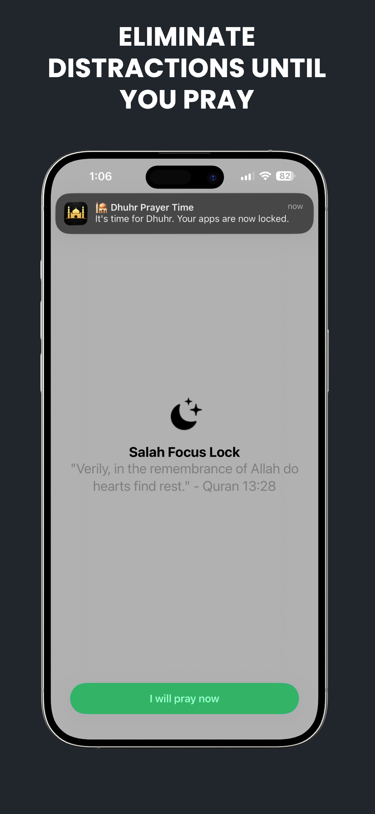
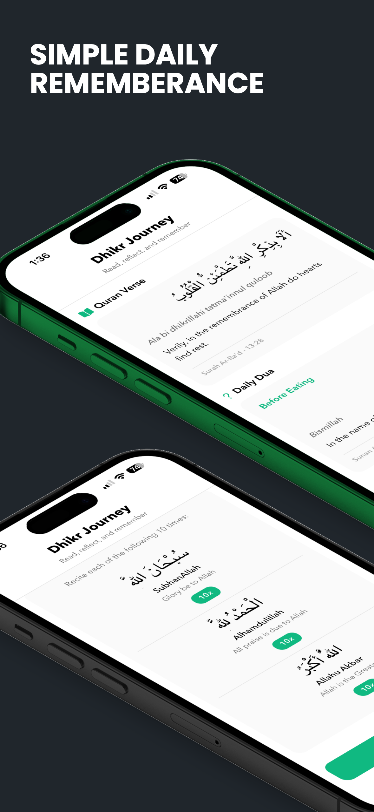
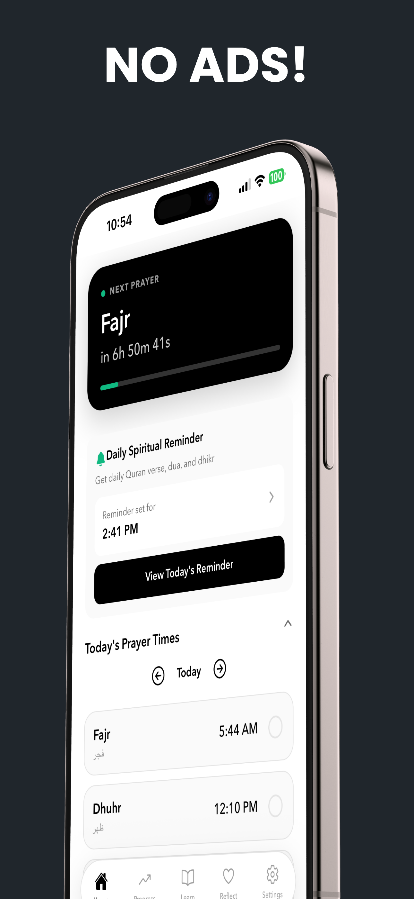
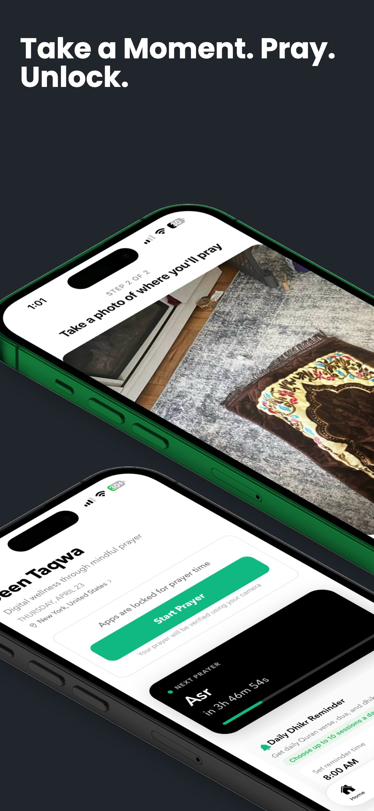
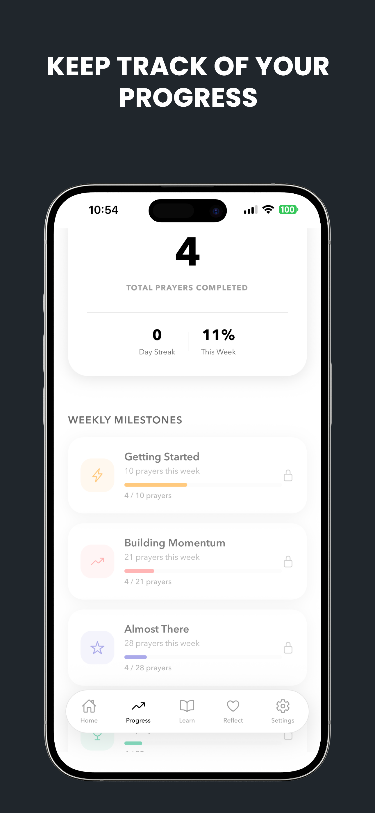
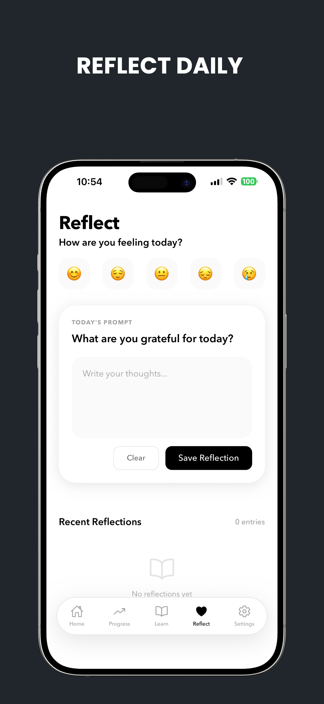

I
The adhan calls.
At each of the five prayer times, your selected apps — Instagram, TikTok, X, whatever pulls you away — quietly lock themselves. No notifications. No guilt trips. Just a closed door.
A quiet iPhone companion that gently locks your apps at each salah — and reopens them only after you've prayed. Your phone works for your deen, not against it.
إِنَّ الصَّلَاةَ تَنْهَىٰ عَنِ الْفَحْشَاءِ وَالْمُنْكَرِ
"Indeed, prayer prohibits immorality and wrongdoing."
— Surah Al-'Ankabut · 29:45
At each of the five prayer times, your selected apps — Instagram, TikTok, X, whatever pulls you away — quietly lock themselves. No notifications. No guilt trips. Just a closed door.
Unroll your musalla. Make wudu. Face the Qiblah. Take your time. The only way forward is through the salah — just as the Prophet ﷺ taught.
A quick photo of your prayer spot confirms you prayed. Your phone opens again. Your streak grows. Your heart, insha'Allah, grows with it.
Deen Taqwa uses iOS Screen Time to temporarily block your distraction apps the moment prayer enters. There's no willpower involved — your phone is simply closed for business. When you've prayed, confirm with a photo of your prayer spot and you're back.

Once a day, at a time you choose, your phone pauses for dhikr. A verse from the Qur'an. A sincere dua. SubhanAllah, Alhamdulillah, Allahu Akbar — counted with a tap. The kind of small moment that, repeated daily, changes a life.


Your next prayer at the top. Daily spiritual reminders set to your time. Today's full salah schedule — Fajr through Isha — in one calm view. No ads, ever.
Every surah in Arabic with English translation. Marked clearly as Meccan or Medinan. Search by name. Pick up where you left off.

Daily duas. Prayer-related adhkar. Life events, forgiveness, protection and guidance — categorized so you always find the right words.
Every salah logged. Every day counted. Watch consistency become second nature — and your relationship with Allah become the thing that anchors every other part of your day.

A single prompt. A place to say what you're grateful for, what weighed on you, how your heart felt today. Small honest entries, kept private, add up to the kind of self-awareness Islam has always asked of us.

وَأَقِمِ الصَّلَاةَ لِذِكْرِي
"And establish prayer for My remembrance." — 20:14
Free download · Premium 7-day trial · iPhone & iPad